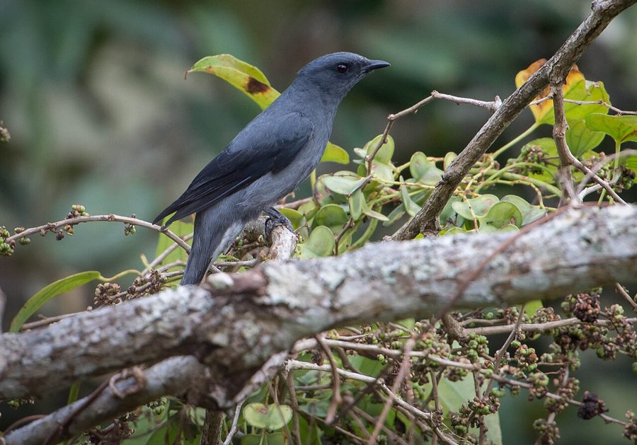

ब्लैक-विंग्ड कुक्कूश्राइकBlack-winged Cuckooshrike
Coracina melaschistos · Campephagidae · BRD-0244

- Scientific name वैज्ञानिक नाम
- Coracina melaschistos (Latham, 1790)
- Family कुल
- Campephagidae
- Hindi हिंदी
- ब्लैक-विंग्ड कुक्कूश्राइक
- Local names स्थानीय नाम
- black-winged cuckooshrike, black winged cuckooshrike, cuckooshrike
- Status here यहाँ की स्थिति
- native
- Movement आवागमन
- Winter visitor
- Known from कहाँ दर्ज
- Others have published records from the Basti–Ayodhya districts बस्ती–अयोध्या के ज़िलों से दूसरों के प्रकाशित अभिलेख
- IUCN IUCN
- LC
- Review समीक्षा
- audited and independently read
When to look कब देखें
Winter visitor शीतकालीन प्रवासी. Expected mainly in October, November, December, January, February, March, April, May. मुख्यतः अक्टूबर, नवंबर, दिसंबर, जनवरी, फ़रवरी, मार्च, अप्रैल, मई में अपेक्षित।
Arrives in October–November from breeding grounds in the Himalayas and central India; departs by April–May. Ali & Ripley (1968) document arrival and departure timing across India. All migrants and visitors →
Uses and possibilities उपयोग और संभावनाएँ
Drawn from the documented uses in the profile below, where each is labelled traditional, current or a research lead. All uses →
Tell it apart from इनसे अलग पहचानें
ब्लैक-विंग्ड कुक्कूश्राइक / Black-winged Cuckooshrike
Coracina melaschistos (Latham, 1790) — Campephagidae
ब्लैक-विंग्ड कुक्कूश्राइक — यह सर्दियों में हिमालय से आने वाली छोटी शिकारी चिड़िया है जो पूर्वी उत्तर प्रदेश के जंगल के किनारे और खेतों के पास के पेड़ों में अक्टूबर से मई तक दिखती है। इसके काले पंख और हल्के शरीर से यह आसानी से पहचानी जाती है। यह पत्तियों में छिपे कीड़े खोजकर खाती है और अक्सर छोटे झुंड में चलती है।
Quick Identification त्वरित पहचान
| Feature | Description |
|---|---|
| Size | Small; 20–23 cm long |
| Plumage | Grey to light grey head and body |
| Wings | Black; distinctive black flight feathers and wing-coverts |
| Tail | Black with white tips on outer feathers |
| Underparts | Pale grey to whitish |
| Bill | Medium, slightly hooked; dark grey |
| Behaviour | Moves through canopy and mid-storey; often in small flocks |
| Call | Melodious whistles and churring notes |
Field tip: In winter deciduous woodland and cultivation margins, look for a pale grey and black bird moving restlessly through foliage, often with other small birds. The black wings contrast sharply with the pale grey body. Hangs acrobatically while searching for insects.
हिंदी — कैसे पहचानें:
छोटी चिड़िया; शरीर हल्का भूरा-सफेद।
काले पंख, काली पूंछ।
पत्तियों में कीड़े खोजती है।
छोटे झुंड में रहती है।
Morphology आकारिकी
Biometrics:
| Measurement | Range |
|---|---|
| Total length | 200–230 mm |
| Wing (flattened chord) | 110–125 mm |
| Tail | 80–95 mm |
| Bill | 18–22 mm |
| Tarsus | 18–21 mm |
| Weight | 35–50 g |
Size: 20–23 cm long; wingspan 32–38 cm. Weight 35–50 g.
Plumage (males and females similar): Head, nape, and upper back ashy-grey. Lower back and rump slightly paler grey. Entire wing-coverts black, forming a distinctive broad black band across the wing. Flight feathers black with narrow white edges to inner secondaries. Tail black with white tips to outer tail feathers. Throat and underparts pale grey to whitish. Undertail-coverts white.
Bill: Medium length, slender, slightly decurved (hooked), dark grey. Adapted for gleaning insects from foliage.
Legs and feet: Dark grey to black; thin, suited for clinging to branches.
Eyes: Dark brown.
Sexual dimorphism: Minimal; females slightly duller than males.
Juveniles: Browner above; black wing-coverts less sharply defined.
Vocalisations. Call repertoire:
- Contact call: Melodious whistles, often a clear whee-whee-whee or tsee-tsee-tsee.
- Alarm call: Harsh churring or rasping notes when disturbed; frequency around.
- Song: Series of melodious whistles, often delivered while moving through canopy.
हिंदी: सुहावनी सीटी जैसी आवाज़। घबराहट में कठोर "चर-र-र" ध्वनि देती है।
Behaviour & Ecology व्यवहार और पारिस्थितिकी
Insectivorous foliage-gleaner: Black-winged Cuckooshrikes feed entirely on insects gleaned from foliage and branches:
- Small insects (flies, small beetles, parasitic wasps)
- Caterpillars
- Small spiders
- Occasionally small flying insects caught in mid-air
Feeding behaviour: Move restlessly through canopy and mid-storey, hanging acrobatically from branches and leaf clusters to examine undersides of leaves. Often pick insects from bark. Rarely come to ground.
Social behaviour: Gregarious; often found with mixed-species feeding flocks in winter alongside drongos, babblers, and sunbirds. Flocks of 5–15 birds are common.
Flight: Swift, undulating flight with strong wingbeats.
Predators: Raptors such as sparrowhawks and forest falcons; corvids may prey on nestlings.
हिंदी: झुंड में घूमती है। पेड़ों की पत्तियों से कीड़े निकालती है। दूसरी चिड़ियों के साथ मिलकर रहती है।
Life Cycle / Phenology जीवन चक्र
Winter visitor: Absent during breeding season (May–August); returns to eastern UP from October and remains through April.
Arrival and departure: First flocks arrive in mid-October; numbers peak in December–February; departure begins in April, with most birds gone by May.
Moult: Pre-migratory moult occurs before arrival at wintering grounds.
Roosts: Nocturnal roosts in trees; daytime feeding in canopy.
हिंदी: अक्टूबर में आता है, अप्रैल तक रहता है। पेड़ों पर रात बिताता है।
Host Plants or Prey आहार
| Prey Type | Examples | Feeding Behaviour |
|---|---|---|
| Small insects | Flies, small beetles, wasps | Glean from foliage and branches |
| Caterpillars | Various small species | Pick from leaves and twigs |
| Small spiders | Web-dwelling species | Extract from bark crevices |
हिंदी: छोटे कीड़े खाती है। पेड़ों की पत्तियों और टहनियों से कीड़े निकालती है।
Predators / Natural Enemies शत्रु
- Avian predators: Sparrowhawks, forest falcons, shikras
- At nest: Corvids (crows), snakes
- Parasites: Avian ectoparasites and helminths
हिंदी: बड़ी शिकारी चिड़ियाँ इसका शिकार करती हैं। अंडों को कौवे खा जाते हैं।
Agricultural / Human Relevance कृषि प्रासंगिकता
Pest control: Beneficial species; feeds on leaf-eating insects and caterpillars that damage crops and orchards. Helps regulate insect populations in agricultural areas.
Protected status: Protected under the Wildlife (Protection) Act 1972. Hunting and trade are prohibited.
Ecological indicator: Presence indicates healthy woodland and mixed forest habitats with insect-rich canopies.
हिंदी: यह विधि अधिनियम 1972 के अंतर्गत संरक्षित है। कीटों को नियंत्रित करता है।
Expected Locally स्थानीय रूप से अपेक्षित
Not a field record. Written from published accounts for eastern Uttar Pradesh. No confirmed local sighting yet — if you have seen it, that is what the atlas needs.
अभी तक स्थानीय पुष्टि नहीं। यह विवरण प्रकाशित स्रोतों से है, किसी अवलोकन से नहीं।
This species is NOT a field record. The distribution below is based on published sources describing where Black-winged Cuckooshrikes should be looked for in the Basti–Ayodhya region.
Winter range: Expected in eastern Uttar Pradesh from October to May. Deciduous and mixed forest areas, particularly those bordering cultivation, are preferred habitats. The species occurs in patchy distribution depending on food availability.
Habitat preference: Open deciduous woodland, forest edges, mixed scrub with scattered trees, and cultivation margins with trees.
Peak occurrence: December–February, when visiting populations from breeding grounds are present.
GBIF records: GBIF holds published records from these districts in the core region.
What a first record would be: A dated photograph showing the bird clearly in a specific location (with GPS coordinates and date) submitted through the About page of this atlas.
हिंदी: यह पक्षी स्थानीय रूप से अपेक्षित है, न कि देखे गए बतौर प्रेक्षण। अक्टूबर से अप्रैल तक जंगल के किनारों और खेतों के पास के पेड़ों में देखे जाते हैं। पहला रिकॉर्ड के लिए स्पष्ट फोटोग्राफ और तारीख चाहिए।
Distribution वितरण
Global range: Widespread across the Indian subcontinent from the Himalayas south to the Deccan Plateau. Also occurs in parts of Southeast Asia (Myanmar, Thailand).
In India: Distributed throughout India as a winter visitor and partial migrant, with highest densities in the Gangetic plains and foothills.
In Uttar Pradesh: Widespread winter visitor in deciduous and mixed forest areas throughout the state.
In Basti district / eastern UP: Regular winter visitor in deciduous woodland, forest margins, and cultivation areas; present October to May with peak numbers December–February.
Research Questions शोध प्रश्न
- What are the precise breeding grounds and wintering grounds of the populations that visit eastern UP?
- How does the dietary composition change between early winter (October–November) and late winter (February–March)?
- What is the role of temperature and insect abundance in determining arrival and departure dates?
- क्या पेड़ों पर कीटनाशकों के छिड़काव से इस चिड़िया की संख्या में कमी आती है?
- How do Black-winged Cuckooshrikes select foraging sites within mixed-species flocks? (A child can observe and document which bird species flock together.)
- क्या सर्दियों में इस चिड़िया की आहार संबंधी पसंद वहाँ के जंगल की किस्म पर निर्भर करती है?
Similar Species मिलती-जुलती प्रजातियाँ
| Species | Key Difference | Hindi | Field Rule | |
|---|---|---|---|---|
| [[ashy_drongo\ | Ashy Drongo]] (Dicrurus leucophaeus) | Black throughout; longer forked tail; different feeding style | राखी ड्रोंगो | Ashy Drongo is all black with forked tail; Black-winged Cuckooshrike is pale grey with black wings. |
| [[black_drongo\ | Black Drongo]] (Dicrurus macrocercus) | Smaller, all black; forked tail | कालो ड्रोंगो | Black Drongo is smaller, all-black, and has a more forked tail. |
| [[common_iora\ | Common Iora]] (Aegithina tiphia) | Smaller (14–15 cm); yellow and black; different structure | नीले पंख वाली | Common Iora is smaller, with yellow-and-black plumage. |
Field rule: Black-winged Cuckooshrike has a pale grey body with sharply contrasting black wings. Drongos are all-black with longer, forked tails. The Cuckooshrike moves more deliberately and hangs from branches searching foliage.
Taxonomy & Classification वर्गीकरण
Original description. The species was described by John Latham in 1790 as Lanius melaschistos. Later placed in the genus Coracina. Type locality is "East Indies" (designation unclear; probably northern India or Himalayan foothills).
Subspecies. Six subspecies are recognized, with C. m. melaschistos (Latham, 1790) occurring in northern India and the Himalayas. This is the subspecies present in eastern UP.
Family and order placement. Order Passeriformes; family Campephagidae (cuckoostrikes and minivets). The genus Coracina contains medium-sized, arboreal insectivores.
Phylogenetic notes. Cuckooshrikes are distinct from true shrikes (Laniidae) and drongos (Dicruridae), though superficially similar. Molecular studies place them as basal within core Passeriformes.
IUCN status rationale. The species is assessed as Least Concern (LC). Populations are stable and widely distributed across suitable habitat. The species is adaptable to human-modified forest margins and is not threatened by hunting.
हिंदी: यह प्रजाति विश्वभर में पाई जाती है। भारत में सर्दियों में मुख्यतः होती है। आमतौर पर सुरक्षित है।
Photo Gallery फोटो गैलरी
No photos yet — add field photos to media/species/black_winged_cuckooshrike/ and run node scripts/sync_photos.js.
Wanted photos:
- Pale grey and black adult in canopy
- Close-up of head and black wings
- Feeding behaviour in foliage
- Flock moving through mixed woodland
- Roosting position
References संदर्भ
- Latham, J. (1790). Index Ornithologicus, Vol. 1. Benjamin White, London.
- Ali, S. & Ripley, S. D. (1968). Handbook of the Birds of India and Pakistan. Vol. 1 (Divers to Hawks). Oxford University Press, Delhi. Pp. 202–204.
- Cramp, S. & Simmons, K. E. L. (1977). Handbook of the Birds of Europe, the Middle East and North Africa: The Birds of the Western Palearctic. Vol. 1 (Ostrich to Ducks). Oxford University Press. Pp. 278–282.
- Rasmussen, P. C. & Anderton, J. C. (2005). Birds of South Asia: The Ripley Guide. Vol. 2. Smithsonian Institution Press, Washington, DC. Pp. 42–44.
- GBIF Occurrence Data — Coracina melaschistos, India.
- IUCN Red List (2023). Coracina melaschistos — BirdLife International assessment. IUCN, Cambridge. Status: Least Concern.
Source file: species/fauna/birds/black_winged_cuckooshrike.md